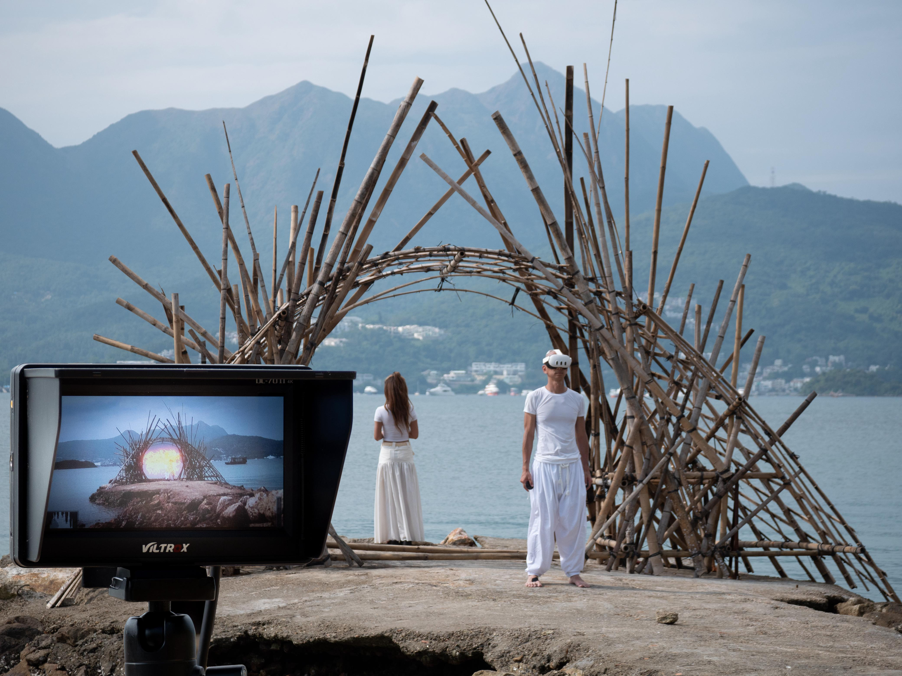
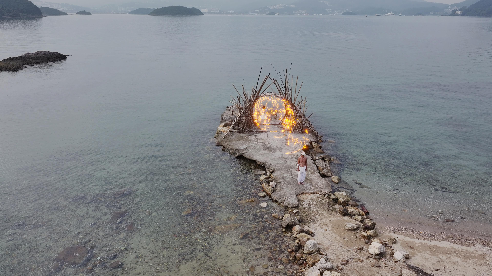
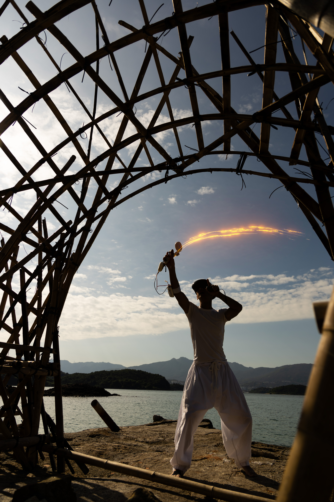
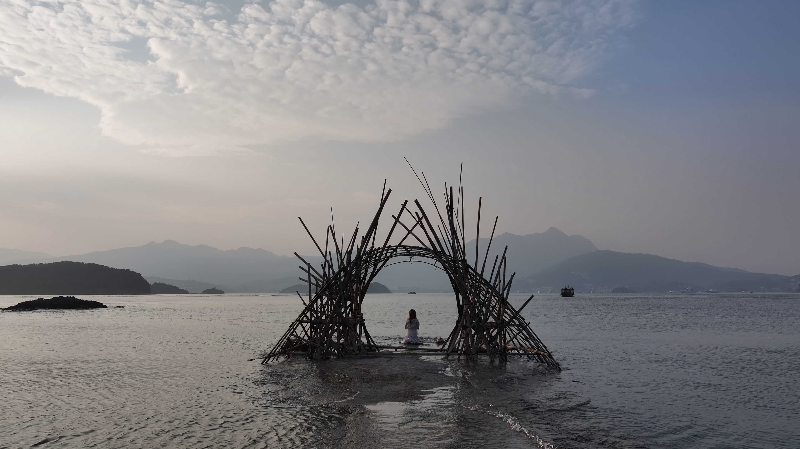

Through the Years, To Touch You
by 「ARtrio」
(Formerly 「X-ARt」)
Man, Nature, Technology, Art
About this Project
‘Through The Tears, To Touch You (TTY2)’ (流 穿越 ) is a site-specific art installation and performance taking place on the old pier of Tim Tin Tsai, a 300 years-old Hakka island village in Hong Kong.
TTY2 bridges past and future by combining traditional craftsmanship with self-developed cutting-edge AR technology. The project centres around three key aspects: a custom Bamboo Moongate, a traditional symbol of reunionm built by a fourth-generation master craftsman; an original poem brought to life as augmented-reality calligraphy in mid-air; and a performance depicting a farewell, accompanied by original music and narrated recollections from the villagers themselves.
This project offers a site-specific multi sensory experience, at the intersection between heritage, technology, and storytelling.Image Gallery

Performance with AR
Bamboo Moongate

Screen View

Drone View with AR

Yim Tin Tsai Performance

Moongate Installation
Awards
- 2026 Finalist, Lumen Prize (Systems and Structures) Norway
- 2026 Cultural & Heritage Award, Brand Design Award Hong Kong
- 2026 iF Design Award (Installation) Germany
- 2025 Judge’s Award (Entertainment), Global Design Awards Hong Kong
- 2025 Top 10 Award (Entertainment), Global Design Awards Hong Kong
Events
-
TTY2 2.0: Gates and Tides of Change Yim Tin Tsai Performing Arts Festival, Yim Tin Tsai, HK
-
TTY2: Through the Years, To Touch You Sai Kung Hoi Arts Festival, Yim Tin Tsai, HK(2 performances)
-
TTY2: Through the Years, To Touch You Sai Kung Hoi Arts Festival, Yim Tin Tsai, HK(3 workshops)
-
TTY2: Through the Years, To Touch You Sai Kung Hoi Arts Festival, Yim Tin Tsai, HK(3 performances)
-
TTY2: Through the Years, To Touch You Sai Kung Hoi Arts Festival, Yim Tin Tsai, HK
-
TTY2: Prelude Yim Tin Tsai Old Pier, HK
Video
Construction
- Master Chan Yuk Kwong
Technology
Photography
- Christopher CHAN
- Bunny NG
- Vi Jun Sean YONG
- Tristan BRAUD
- Hengky SUSANTO
Drone Videography
- CHAN Ho Ching Carson
- Tristan BRAUD
- Christopher CHAN
Soundtrack
- Fr Dominic CHAN
- Mr Nicholas CHAN
- Ms Rosa CHAN
- Ms Yuet Ching CHAN
- Mr Colin CHAN
- Dr Christopher CHAN
Special Thanks
- One Bite Design Studio
- Hong Kong Tourism Commission
- Yim Tin Tsai Village Rural Committee
- The Salt and Light Preservation Centre